Manually Unpacking UPX | PE & PE+ (x86/x64 Tips)
Before going deeper in the content of how to unpack binaries packed by UPX, I want to clarify this is a post of a novice reverser, learning new methods and assembly instructions, If you, as an expert in reversing, identify any interpretation or logical errors, please let me know via Discord (yoshl.). Finally, I would like to clarify that the actual unpacking takes place within the crackme exercise on a 32-bit architecture, as I was unable to dump it on 64 bits, but this does not detract from the concepts learned or methods used, thus I am not removing that section.
x64
Material used for 64-bit arch
The following C code will be compiled and packed:
#include <stdio.h>
int main() {
printf("This is the OEP (Original Entry Point) of this custom ELF\n");
printf("The binary is packed with UPX. Your objetive is you dump the unpacked file.");
printf("\n\nSo, what is your day going?: ");
char response[4092];
scanf("%4091[^\n]",response);
printf("You said: %s\n",response);
return 0;
}First of all, we will start with a PE32+ file to use x64dbg with the pluging scyllia.
Compiling it with GCC and packing it with UPX:
$> x86_64-w64-mingw32-gcc challenge.c -o original.exe
$> cp original.exe packed.exe
$> upx --best --lzma packed.exe
Ultimate Packer for eXecutables
Copyright (C) 1996 - 2024
UPX 4.2.2 Markus Oberhumer, Laszlo Molnar & John Reiser Jan 3rd 2024
File size Ratio Format Name
-------------------- ------ ----------- -----------
403459 -> 187907 46.57% win64/pe packed.exe
Packed 1 file.Checking MD5 Hashes
Before starting the blog, check the following hashes, to do it without problems:
$> sha256sum challenge.c original.exe packed.exe
66112a6242ddff118717da6fb40cff85657629e17cda10185425b45be410112a challenge.c
d46ff0c84370fdc6bd6c2114beb448453ba916bac3cad6283ceb5e3ea80ecf9a original.exe
40a69caa353973adb4d4c05a486488d3047c0cca9fd6777d7ed2261e0053876c packed.exe
$> file challenge.c original.exe packed.exe
challenge.c: C source, ASCII text
original.exe: PE32+ executable (console) x86-64, for MS Windows, 19 sections
packed.exe: PE32+ executable (console) x86-64, for MS Windows, 3 sectionsAs a fun fact, packers replace the original section table of the executable with a reduced one, the original content of the sections are not deleted are compressed or encrypted and stored within new sections.
Manual Unpacking (x64)
Once we have manually unpacked the binary version, we will run the packaged binary version so that the process is then poured onto the disc and manually repaired the PE header. The general steps are:
- Determine the OEP, which is the first instruction before packing.
- Run the program until we reach OEP and allow the malware to open in memory and interrupt performance in OEP.
- Dump the extracted process into memory.
- Fix the IAT chart dumped file to handle the import.
Credits from https://www.manrajbansal.com/post/manually-unpacking-a-upx-packed-binary
Theory for x32 binaries
Here we need to restore the content in memory at runtime by the unpacking stub, the new OEP. With UPX, thje unpacking stub is vbery predictable, you can often find OEP by running until PUSHAD/POPAD sequence followed by a JMP instruction. ONLY IN X86/X32 PROGRAMS, this is not the case.
Investigating more about those instructions we can find this web, where tell us:
“Pushes the contents of the general-purpose registers onto the stack. The registers are stored on the stack in the following order: EAX, ECX, EDX, EBX, ESP (original value), EBP, ESI, and EDI (if the current operand-size attribute is 32) and AX, CX, DX, BX, SP (original value), BP, SI, and DI (if the operand-size attribute is 16). These instructions perform the reverse operation of the POPA/POPAD instructions. The value pushed for the ESP or SP register is its value before prior to pushing the first register (see the “Operation” section below).”*
PUSHAD Instruction
Here the pseudo-code:
IF 64-bit Mode
THEN #UD
FI;
IF OperandSize = 32 (* PUSHAD instruction *)
THEN
Temp := (ESP);
Push(EAX);
Push(ECX);
Push(EDX);
Push(EBX);
Push(Temp);
Push(EBP);
Push(ESI);
Push(EDI);
ELSE (* OperandSize = 16, PUSHA instruction *)
Temp := (SP);
Push(AX);
Push(CX);
Push(DX);
Push(BX);
Push(Temp);
Push(BP);
Push(SI);
Push(DI);
FI;Identifying main function
As it explain Xeno Kovah in Architecture 1001: x86-64 Assembly from the platform OpenSecurityTraining2, each compiler will align the stack at the beginning of a function. Without going in deep detail of how this works we can identify the following pattern in the breakpoint setted on packed.exe throught the Memory Map in x64dbg.
Apparently, this technique is known as “rsp trick”, which a possible definition comes as: At the entry point, the stub saves the original registers, usually with a bunch of pushes, you have to follow the code down until you see the corresponding pops that restore those registers, there should be a jmp immediatly after the registers are restored and that is the real OEP, that should be where you start your dump.
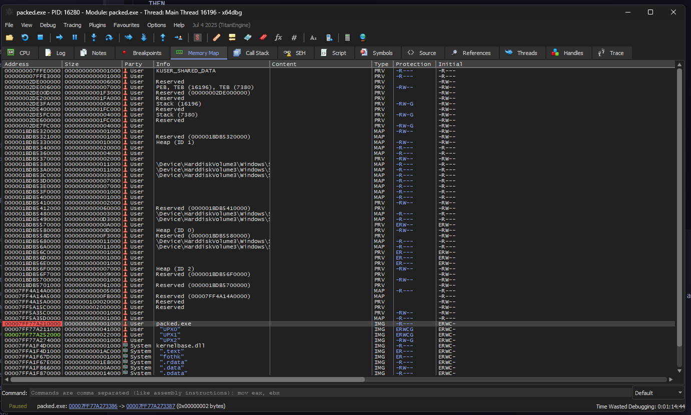
Anyways that breakpoint will be not useful for the moment because automatically x64dbg give us a breakpoint on: 00007FF77A27336E being a ret, the following the program flow we can find a possible dispatcher from a stub:
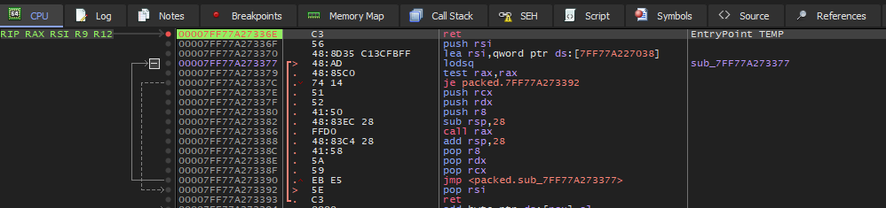
But why is it a dispatcher? Lets break it down:
00007FF77A273377 48:AD lodsq ; RAX = [RSI], RSI += 8
00007FF77A273379 48:85C0 test rax,rax ; Null pointer
00007FF77A27337C 74 14 je 7FF77A273392 ; if ptr==null then exit
; Simulating pushad in x64 arch
00007FF77A27337E 51 push rcx
00007FF77A27337F 52 push rdx
00007FF77A273380 41:50 push r8
00007FF77A273382 48:83EC 28 sub rsp,28 ; Stack Alignment
00007FF77A273386 FFD0 call rax ; Jump to the read address
00007FF77A273388 48:83C4 28 add rsp,28 ; Stack Alignment
; Simulating popad in x64 arch
00007FF77A27338C 41:58 pop r8
00007FF77A27338E 5A pop rdx
00007FF77A27338F 59 pop rcx
00007FF77A273390 EB E5 jmp 7FF77A273377 ; For-Loop
00007FF77A273392 5E pop rsi ; Bottom list
00007FF77A273393 C3 retThus in one iteration the OEP will be displayed. Setting up the breakpoint on 00007FF77A273386 we will be able to run the code and read the disassembly code from the RAX value.
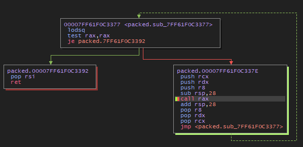
At the forth iteration we obtain the address: 00007FF61F061740, in the Memory Map section appears to be "UPX1":
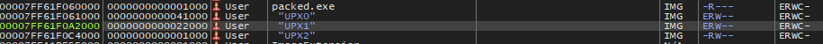
Being the .text data and "UPX0" being the unpacking stub, anyways we can confirm our assertions using the flags of the section, EWR--:
E- ExecutableR- ReadableW- Writable
If we verify with the original.exe we obtain the same code:
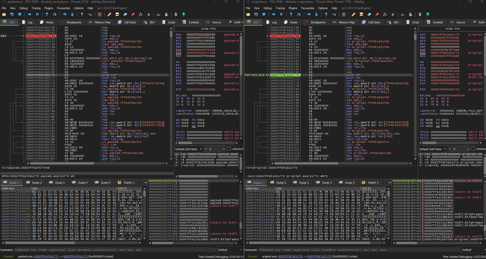
Maybe this is not very legit because in real life you don’t have the source code, but for learning is good. Anyways when we dump it with Scylla v0.9.8 an error occurs. a missing ?.DLL is not found. Searching through the web I conclude to set other breakpoints before the main, to load all necesary dlls.
Anyways if we open the binary whit IDA something we can see the packed code.
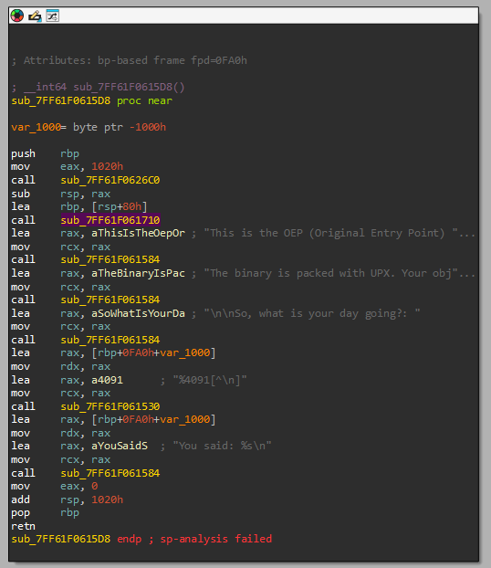
Not everything is perfect
After 3 long days in front of assembly code and asking how this works I decided to give up… and try something easier, get deeper in x32 architecture. But before doing nothing I want to share you the technicalities I have learned these days.
Technicalities learned
Thunk
A thunk is a stub or small block code that functions as a middleware between your code and the routine/API, does some small thing, and then JUMPs to another location (usually a function) instead of returning to its caller. Assuming the JUMP target is a normal function, when it returns, it will return to the thunk’s caller.
Used to avoid to enter real API address into the exe code. Instead, throught an Import Address Table (IAT) aims to these thunks, which in turn point to the actual code in the DLL. Real example
; Calling MessageBoxA
call qword ptr [IAT_MessageBoxA] ; indirect thunk FThunk (Forwarded Thunk)
A special case of thunking in which the API you request is not in the DLL you create, but its export is forwarded to another DLL.
KERNEL32.dll -> GetProcAddress = forwarded to KERNELBASE.GetProcAddressIn IAT will appear an ASCII string such as: KERNELBASE.GetProcAddress, the thunk still existing but aims to another DLL.
IAT (Import Addres Table)
PE table to save pointer address of the imported functions, used in tools such as: Scylla or ImpRec
Our problem with the binary was with the reciever DLL of the FThunks, that is not found:
?.dll. But at the moment we are able to locate the main code after all the stub, at least something is something.Doing a bit of research I found the problem could radicate in the compiler, but is not 100% accurate.
x32/x86
Upxed - Crackme
| Author | Language | Upload |
|---|---|---|
| crackmes.de | Assembler | 10:52 AM 03/25/2018 |
| Platform | Difficulty | Quality |
| Windows | 2.0 | 4.0 |
Link to download: https://crackmes.one/crackme/5ab77f5433c5d40ad448c18c
Sentence
UPX'd
by BlueOwl
In this crackme the mission is to view the originally packed code. Aka
view the code that generates the message "Example of playing with UPX."
Before this code the secret mission password will be shown, which you
need to get.
Basically what i want to accomplish is show you that you can do some
nice "tweakings" of upxed programs to make them harder to unpack. :)
All the protections will trigger unique messageboxes.
Mission
Find the mission password, which will also open the .zip file. Be sure
to explore all the protections and write a nice tutorial about them.
Have fun!
Details
Packing.............UPX
Anti-depacking......Yes (upx -d the file and see the result :))
Anti-dumping........Yes
Anti-debugging......Yes (simple)
Last words
Thanks go to betatester Sinclaire for pointing out a security flaw :).Trying upx -d
If we upx -d it, it still packed but with 10 sections, so as we were trying before, we open x32dbg and start debugging, to avoid the anti-debugging protections we will use ScyllaHide Pluging and the Anti-dumping will be problem of the future, maybe Scylla bypass it automatically… I hope it.
Stub Information Gathering
As we are on x86 architecture we can filter by the pushad expression. Inside packed.exe there is only one pushad instruction in: 004040E0:
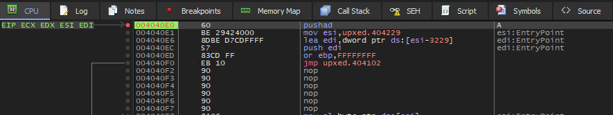
Here focus on EBP, the base pointer for those who doesnt know, where the stack frame pointer is located just before the stub. Knowing this, create a breakpoint in that address:
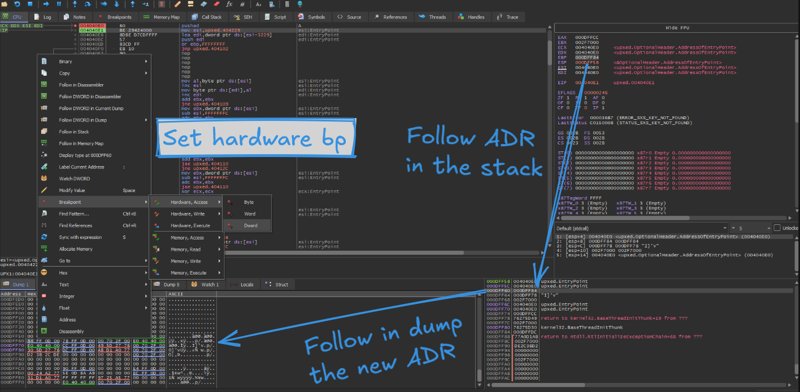
In our case (probably ASLR is activated), the breakpoint is set on 000DFF60, after pressing F9 (run function) we will be placed at the end of the stub process, you can confirm that with the assembly instruction: popad
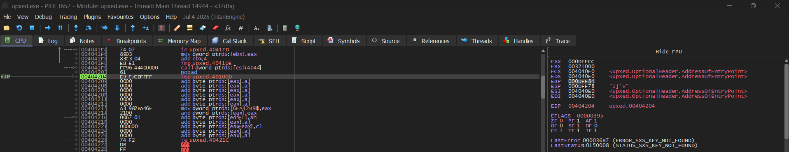
EBP still have the final address of the stub and we only need to jump into upxed.401000, try using F8 the step over function. Finally you are inside the main code:
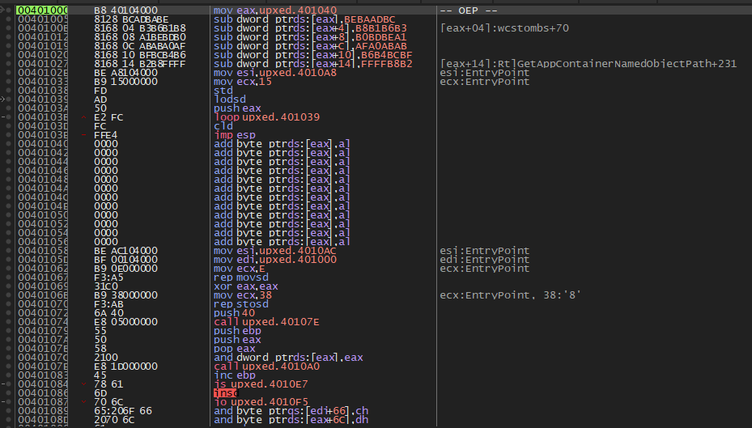
The comment
-- OEP --was added by me, you won’t see it.
Dumping with Scylla
At this moment, open Scylla v0.9.8, search for the import addres table by clicking in IAT Autosearch:
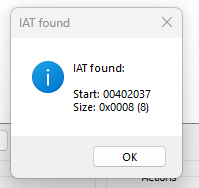
Get the imports to avoid future problems, in this case with user32.dll and dump the file. But this is not it, if you try to open the file an error will be appear because the functions are without the base address and they will call to invalid address.
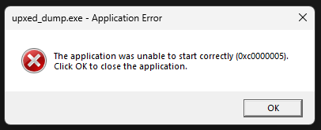
An easy solution is to fix the dump from Scylla, I provide you the logs this take to confirm and verify you did all correctly:
Analyzing C:\Users\yl\Documents\Retos\CUSTOM\upxed.exe
Module parsing: C:\Windows\SysWOW64\ntdll.dll
Module parsing: C:\Windows\SysWOW64\kernel32.dll
Module parsing: C:\Windows\SysWOW64\KernelBase.dll
Module parsing: C:\Windows\SysWOW64\user32.dll
Module parsing: C:\Windows\SysWOW64\win32u.dll
Module parsing: C:\Windows\SysWOW64\gdi32.dll
Module parsing: C:\Windows\SysWOW64\gdi32full.dll
Module parsing: C:\Windows\SysWOW64\msvcp_win.dll
Module parsing: C:\Windows\SysWOW64\ucrtbase.dll
Module parsing: C:\Windows\SysWOW64\imm32.dll
Loading modules done.
Imagebase: 00400000 Size: 00006000
IAT Search Adv: IAT not found at OEP 00401005!
IAT Search Nor: IAT VA 00402037 RVA 00002037 Size 0x0008 (8)
IAT parsing finished, found 1 valid APIs, missed 0 APIs
DIRECT IMPORTS - Found 0 possible direct imports with 0 unique APIs!
Dump success C:\Users\yl\Documents\Retos\CUSTOM\upxed_dump.exe
Import Rebuild success C:\Users\yl\Documents\Retos\CUSTOM\upxed_dump_SCY.exeCongratulations!!!
You have recovered an upxed program:
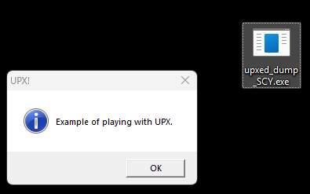
As a func fact. detect it easy will detect it as a compressed file but you will be able to open normally with IDA or any decompiler:
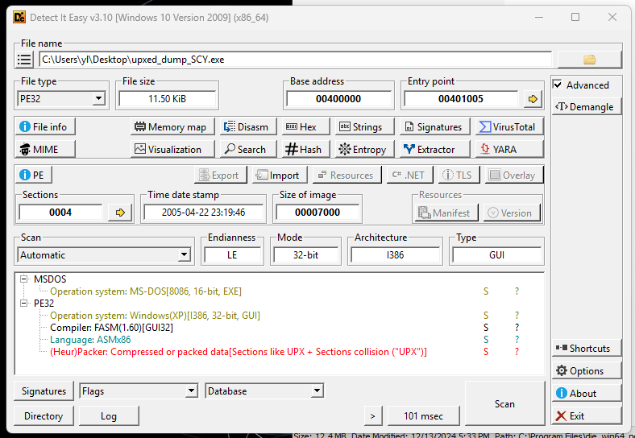
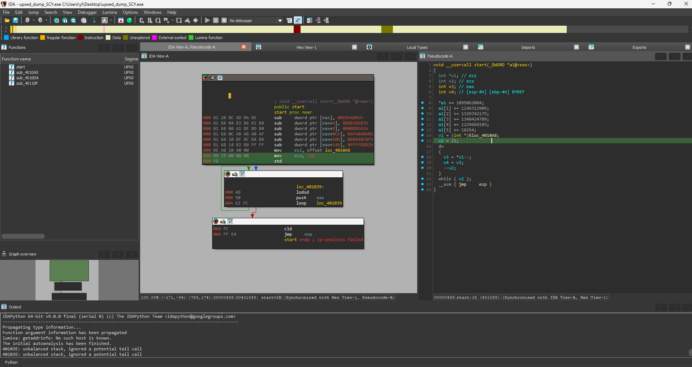
MD5 Hash file: e854216e7cc3b5de350c4ed958c25c68
I hope you learn and enjoy the mini-blog, in a future will be modify with a brief explanation of how to extract x64 upxed files :)